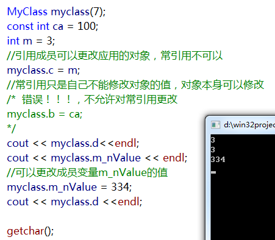
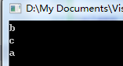
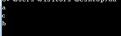

一. C++类的引用成员，类的常量成员，类的static成员的初始化方式
类的引用成员和常量成员初始化放在初始化列表里，因为初始化只有一次，需要在构造函数之前进行初始化，写在类的构造函数会出错。类的static变量要放在类声明的外边定义，因为static变量属于整个类，而不是类对象，所以不能放在类的构造函数里。
举个例子：
一个类中既有常量成员也有引用成员
1 | class MyClass |
类的引用成员必须在类的初始化列表初始化，而且必须初始化，否则编译出错。类的static成员需要在类外定义，否则使用时会出错。
类的常引用和引用的区别是
可以通过引用修改引用对象的数值，不可以通过常引用修改引用对象的数值引用可以更改引用的对象，从而引用另一个变量，常引用是不能更改引用的对象的。常引用可以引用非常量(变量)和常量以及右值，引用只能引用变量。当常引用引用变量的时候，可以修改变量值，常引用的数值会随着改变，但是不能直接修改常引用。
下面是测试

二 类的常对象调用的接口必须都为常函数，很多人写法不注意编译会报错。
代码示例为自己的一个项目，msgStream为常引用，那么他内部的列表返回的迭代器需要用const_iterator
1 | MsgStream( const MsgStream & msgStream) |
msgStream 这个常引用也只能调用常量成员函数， 函数体后有const声明的函数
三析构函数的顺序，构造函数的顺序
当类子类中包含其他的类，构造的顺序是先构造基类对象，然后构造子类包含的类对象，最后构造子类对象。当基类中包含其他的类，构造的顺序是先构造基类中包含的类对象，然后构造基类对象，最后构造子类对象。当类子类中包含其他的类，析构的顺序是先构子类对象，然后析构子类包含的其他类对象，最后析构基类。当基类中包含其他的类，析构的顺序是先析构子类对象，然后析构基类对象，最后析构基类中其他对象。1
2
3
4
5
6
7
8
9
10
11
12
13
14
15
16
17
18
19
20
21
22
23
24
25
26
27
28
29
30class c
{
public:
c(){ printf("c\n"); }
protected:
private:
};
class b
{
public:
b(){ printf("b\n");}
protected:
c C;
private:
};
class a : public b
{
public:
a(){ printf("a\n"); }
protected:
private:
};
int main()
{
a A;
getchar();
}
结果：
1 | class c |
结果：

1 | class c |
结果：
